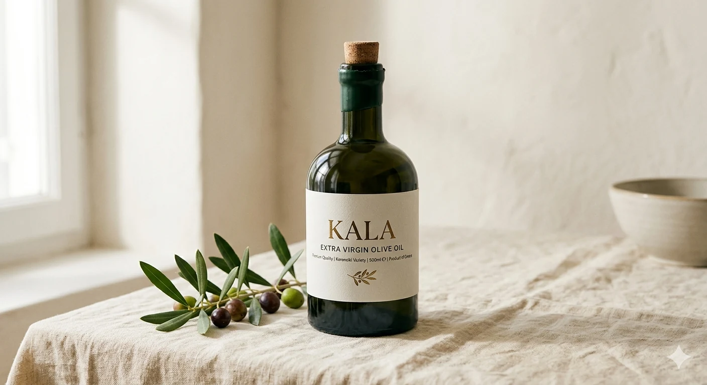
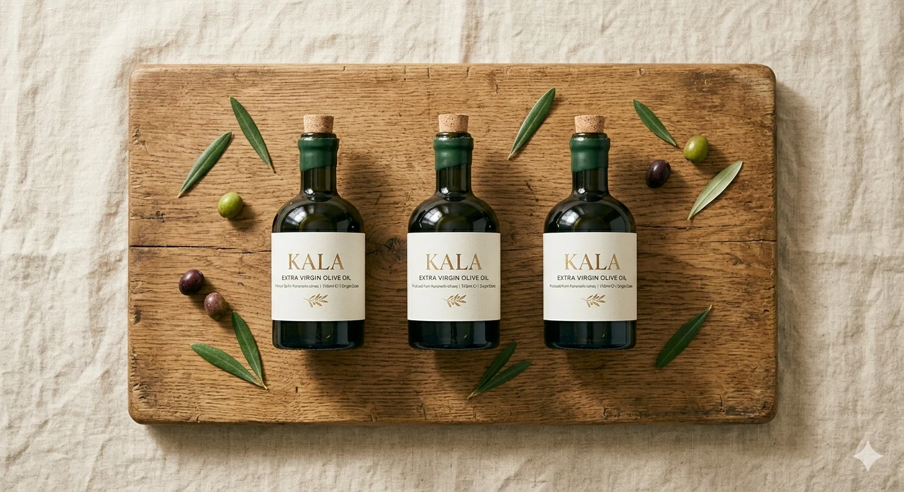
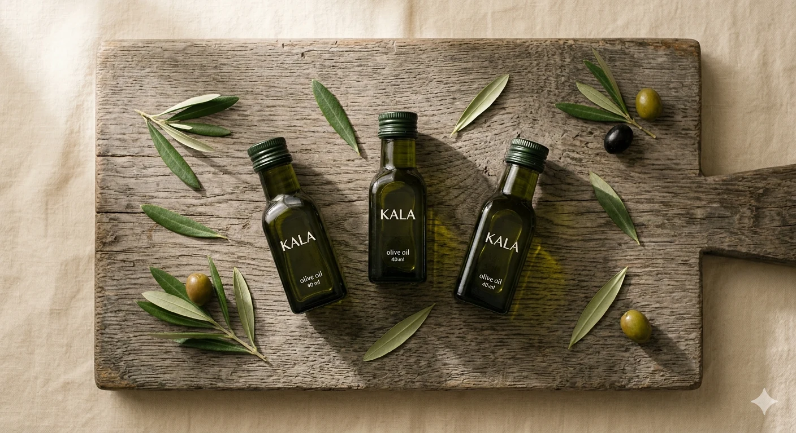
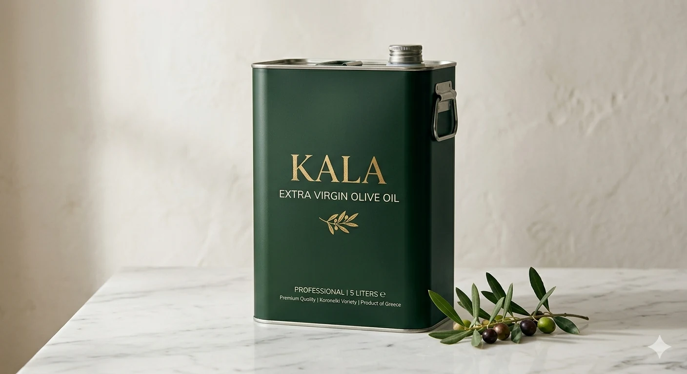
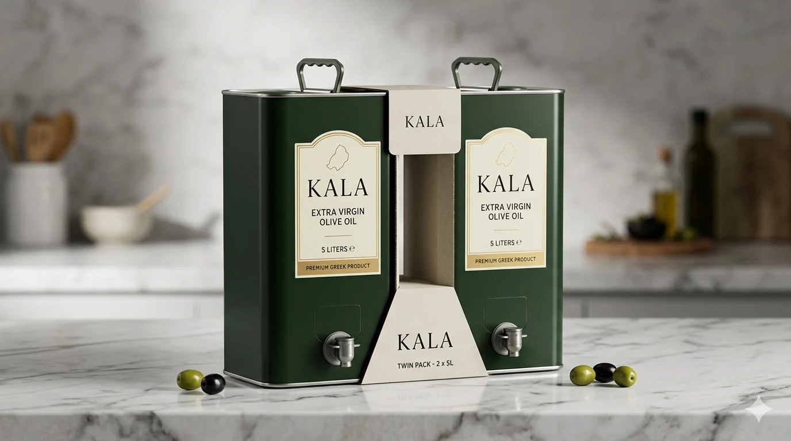
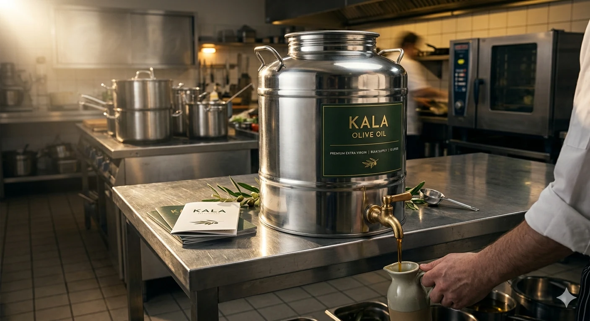

Extra virgin olive oil from Ayvalık. Cold-extracted within four hours of harvest. Tested, batch-numbered, uncompromising. Three tiers — one extraction standard.
Premium for the chef's table. Standard for the working kitchen. Catering for the operation that never stops.
Single-grove. Numbered from bottle one. The detail on the plate the guest never sees but always tastes.

Single-grove, single-harvest. Numbered from bottle one. A finishing oil — cold-extracted the morning of harvest. Available October only.

Three oils, three harvests: early, mid-season, and a cold-infused smoked variant. Designed for chef education and sommelier programmes.

Single-extraction. 40ml per shot. Polyphenol load intact, free acidity certified. The day's olive oil requirement in one dose.
Cold-extracted, nitrogen-flushed, pressed within four hours. The oil a professional kitchen relies on from first prep to last service.

The workhorse. Nitrogen-flushed tins lock freshness from grove to kitchen. Designed for volume without compromise on acidity or polyphenol count.

Double-pack for medium-volume kitchens. Same specification as the 5L Reserve. Volume pricing reflects the working relationship, not a premium shelf.
The same extraction standard, the same lab certification, at the volume a catering operation requires. 0.3% does not change.

Drum-format with dispensing tap. Same certified Ayvalık oil — same 0.3% — at the volume a catering operation requires.
Annual contracts for hotel groups, hospital catering, institutional supply. White-label packaging available. Full traceability, custom documentation.
"Three thousand years of cultivation. One harvest. No compromises."
Ayvalık sits at the northern edge of the olive's natural growing range. Cool nights slow the ripening of the Ayvalık variety — concentrating polyphenols, building a complexity that warm-climate oils rarely achieve. It is not the easiest place to grow olives. That is precisely the point.
We harvest at 10–20% ripeness — before the olive has completed its sugar cycle — to fix free acidity below 0.3% and capture a bitterness and pepper finish that professional palates recognise immediately. The oil is pressed cold, within four hours of leaving the grove. No overnight storage. No fermentation. No shortcuts.
The result is not wellness oil. It is not a lifestyle product. It is the ingredient a chef reaches for when the dish depends on it.
Every step is a constraint we impose on ourselves. Quality does not scale by cutting corners.
Picked at 10–20% ripeness. Green fruit, high polyphenols, low free acidity. Hand-combed where terrain demands it. No mechanical damage to the fruit surface.
Fruit moves from grove to press within four hours. No overnight storage, no fermentation. Cold extraction at 24°C — temperature never exceeded. Continuous two-phase decanter.
Every batch tested for free acidity, peroxide value, UV absorption, and polyphenol concentration. IOC-standard methodology. Certificates available on request — no exceptions.
Filled into nitrogen-flushed tins and drums. Batch-numbered. Temperature-controlled logistics to the professional kitchen's door. Shelf life: 18 months from press date.
The KALA Catering range applies the same extraction standards and lab certification to high-volume operations. Whether you run 200 covers a night or supply a hotel group across three cities, the number on the certificate does not change: 0.3%.
Annual supply contracts include fixed-harvest pricing, preferred allocation from the October press, dedicated batch documentation, and the option to white-label under your own brand.
"The specification is not an aspiration. It is the outcome of a controlled process, repeated to the same standard each October."
"The best finishing oil I have used. Consistent batch after batch — which is what you need at this level. The acidity holds up to what the certificate says."
"We use the 5L Reserve across the entire kitchen. For that price-point and that acidity, there is nothing comparable in this market. Our guests notice it."
"We switched the entire group — five properties — to the KALA catering supply. The spec sheet was compelling. The oil confirmed it."
Direct supply. No intermediaries, no shelf markups on integrity. We work with restaurants, hotels, caterers, and distributors on a direct-from-grove basis. Full traceability. Competitive pricing for volume commitments.
We respond within 2 working days.
We write for professionals. The science, the geography, and the decisions that produce the oil in your kitchen.
At 10–20% ripeness, free acidity sits below 0.3% and polyphenol concentration peaks. Here is the chemistry behind the decision.
Quality & SpecificationThe IOC ceiling is 0.8%. Most commercial oils sit at 0.5–0.7%. At 0.2%, the chemistry changes in ways a trained palate detects immediately.
GeographyCooler nights, slower sugar accumulation — a fruit that struggles. That struggle is the specification. Latitude is not just geography; it is flavour.
Kitchen ApplicationThe conventional wisdom is to reserve premium EVOO for finishing. That advice was written for fragile mass-market oil. We ran the tests.
Supply ChainBetween grove and tin, every hour is a liability. The four-hour rule is not a marketing claim. It is chemistry.
Catering & VolumeThe KALA 15L drum meets the same IOC threshold as the numbered 500ml bottle. Here is why that is achievable at scale.